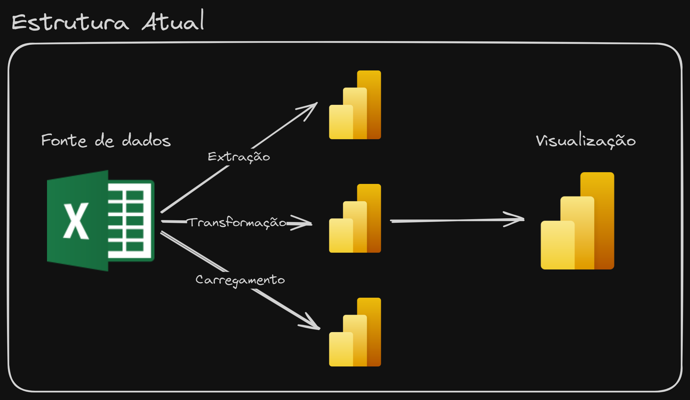
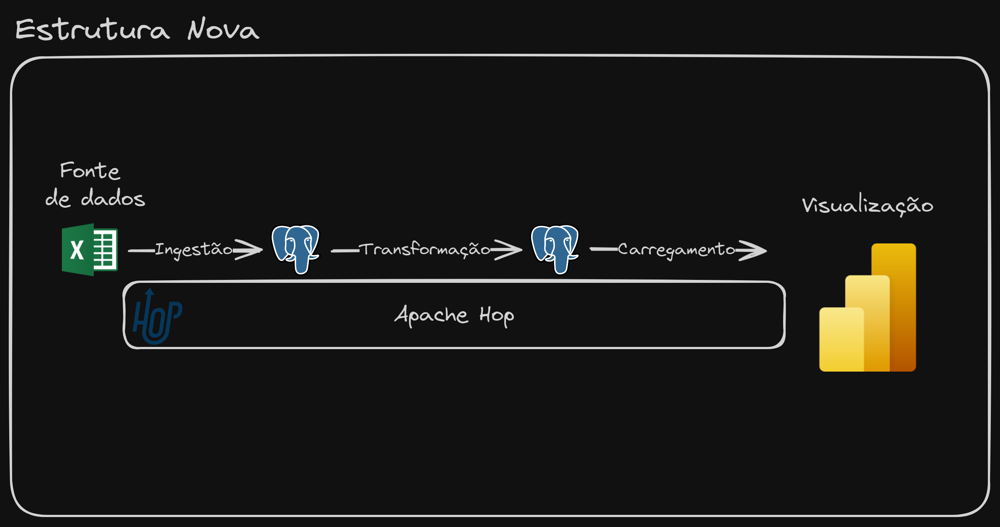
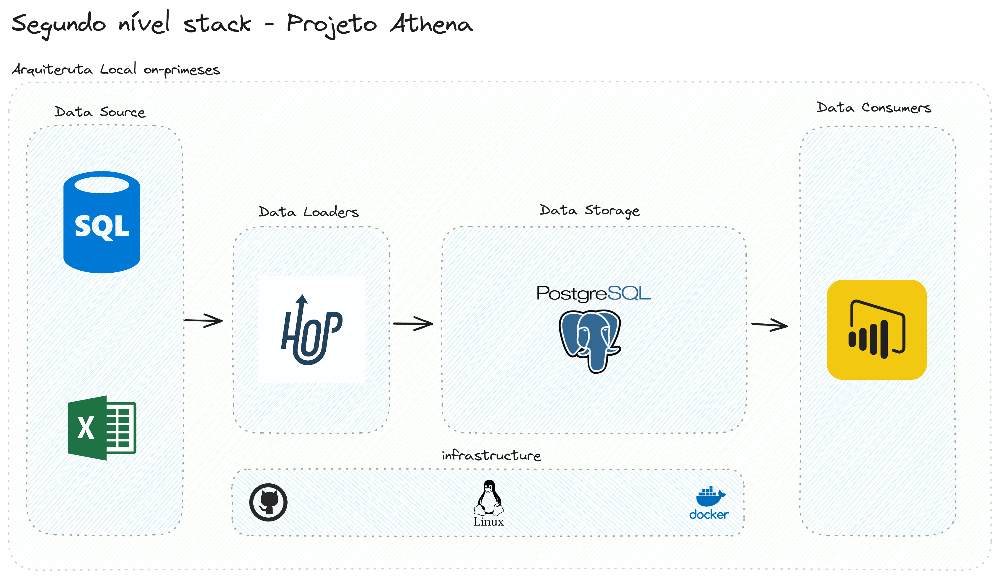
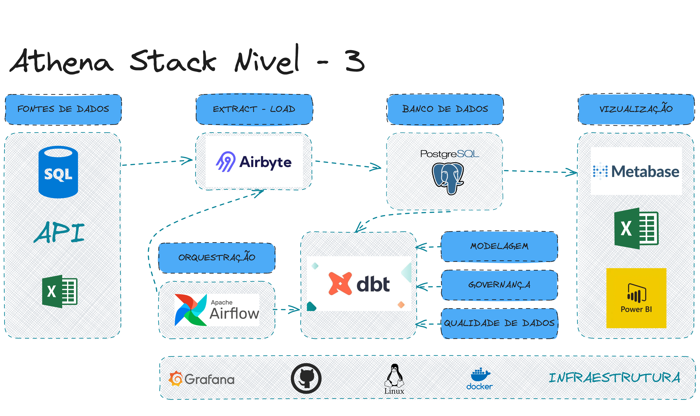

Projeto Athena - Evolução de uma Stack de Dados 🧙♂️
Descrição
O Projeto Athena é um projeto de evolução de uma stack de dados, que tem como objetivo demonstrar as habilidades de Engenharia de Dados, DataOps, Arquitetura de Dados e Orquestração de Pipelines.
Esse é um projeto inovador e desafiador, que aborda conceitos e tecnologias avançadas de Engenharia de Dados, e tem como objetivo capacitar profissionais de dados a construir e evoluir stacks de dados eficientes e escaláveis.
Ciclo de vida da Engenharia de Dados
| Elemento | Descrição |
|---|---|
| Segurança | Controle de acesso para dados Sistemas |
| Gerenciamento de dados | Governança de dados Capacidade de dados Accountability Modelagem de dados Integridade dos dados |
| DataOps | Governança de dados Observabilidade e monitoramento Relatórios de incidentes |
| Arquitetura de dados | Análise de dados Desenvolvimento Plataforma de dados Gerar valor para dados |
| Orquestração | Coordenar fluxos de trabalho Programação Executar tarefas |
| Engenharia de software | Habilidades de programar Prototipação Gestão de código Teste e recuperação |
Stack Inicial
Introdução
O projeto Athena é um projeto de evolução de uma stack de dados. A stack de dados é um conjunto de ferramentas e tecnologias que são utilizadas para a ingestão, armazenamento, processamento e visualização de dados. A stack de dados inicial será baseada na que muitas empresas usam no seu dia a dia e a mesma que muitos profissionais de dados aprendem a utilizar. A stack de dados inicial é composta por:
Excelcomo origem de dados;Power Querycomo ferramenta de ingestão de dados;Power Querycomo ferramenta de transformação de dados;Power Querycomo ferramenta de carga de dados;Power BIcomo ferramenta de visualização de dados.

Desvantagens
Apesar dessa ser na maioria das vezes a stack de dados inicial de muitas empresas e analistas de dados, ela possui algumas desvantagens:
-
Excel como origem de dados: O Excel é uma ferramenta muito poderosa e versátil, mas não é a melhor ferramenta para armazenar dados. O Excel não é um banco de dados e não foi feito para armazenar grandes volumes de dados. Além disso, o Excel não é uma ferramenta colaborativa, o que dificulta o compartilhamento de dados entre os membros da equipe.
-
Power Query como ferramenta de ingestão de dados: O Power Query é uma ferramenta muito poderosa e versátil, mas não é a melhor ferramenta para a ingestão de dados. O Power Query não foi feito para lidar com grandes volumes de dados e não é uma ferramenta colaborativa.
-
Power Query como ferramenta de transformação de dados: Apesar de ter bastante poder de transformação de dados e ser fácil de usar, o Power Query não é a melhor ferramenta para a transformação de dados. O mesmo não foi feito para lidar com grandes volumes de dados além de não possuir versionamento de código, deixar todo o processo na ferramenta e não permitir a reutilização de código. Tudo isso gera uma divida técnica muito grande, para o time de dados.
-
Power Query como ferramenta de carga de dados: O Power Query não é a melhor ferramenta para a carga de dados.
-
Power BI como ferramenta de visualização de dados: O Power BI é uma ferramenta muito poderosa e versátil para a visualização de dados, e é ai que ele deve ser utilizado.
Evolução - Nivel 1
A stack de dados evoluída é composta por:
Excelcomo origem de dados;Apache Hopcomo ferramenta de ingestão de dados;PostgreSQLcomo banco de dados (Data Warehouse);Apache Hopcomo ferramenta de transformação de dados;Apache Hopcomo ferramenta de carga de dados;Power BIcomo ferramenta de visualização de dados.

Vantagens
A stack de dados evoluída possui várias vantagens em relação a stack de dados inicial:
-
Excel como origem de dados: O Excel é uma ferramenta muito poderosa e versátil, e é muito utilizada como origem de dados. A stack de dados evoluída mantém o Excel como origem de dados, mas utiliza o Apache Hop para fazer a ingestão dos dados.
-
Apache Hop como ferramenta de ingestão de dados: O Apache Hop é uma ferramenta muito poderosa e versátil para a ingestão de dados. O Apache Hop foi feito para lidar com grandes volumes de dados e é uma ferramenta colaborativa.
-
PostgreSQL como banco de dados (Data Warehouse): O PostgreSQL é um banco de dados muito poderoso e versátil, e é muito utilizado como Data Warehouse. O PostgreSQL foi feito para lidar com grandes volumes de dados e é uma ferramenta colaborativa.
-
Apache Hop como ferramenta de transformação de dados: O Apache Hop é uma ferramenta muito poderosa e versátil para a transformação de dados. O Apache Hop foi feito para lidar com grandes volumes de dados e possui versionamento de código, permitindo a reutilização de código.
-
Apache Hop como ferramenta de carga de dados: O Apache Hop é uma ferramenta muito poderosa e versátil para a carga de dados.
-
Power BI como ferramenta de visualização de dados: O Power BI é uma ferramenta muito poderosa e versátil para a visualização de dados, e é ai que ele deve ser utilizado.
| N1 | YouTube
Arquivos - Nível 1
Conclusão - Nível 1
A stack de dados evoluída é muito mais robusta e poderosa do que a inicial, capaz de processar maiores volumes de dados de forma eficiente e colaborativa.
Não mudamos só as ferramentas, mas também a forma de pensar e trabalhar com dados. A stack de dados evoluída é baseada em conceitos de DataOps e Data Engineering, que são fundamentais para a construção de pipelines de dados eficientes e escaláveis.
Porém como mencionamos essa não é a stack definitiva, ela é apenas o primeiro passo de uma longa jornada de evolução de dados. Por conta disso temos algumas oportunidades de melhoria que serão abordadas nas próximas evoluções:
-
🗒️ Excel como origem de dados: Apesar de termos criado validações, ainda é possível que os usuários do Excel façam alterações indevidas nos dados. O que torna o processo de ingestão de dados vulnerável a erros. A melhor abordagem seria a substituição do Excel por um banco de dados relacional, uma API ou um sistema de mensageria.
-
🦺 Modelagem de dados no Apache Hop: Apesar de termos criado um Data Warehouse no PostgreSQL, a modelagem de dados no Apache Hop ainda é um ponto de atenção, pois estamos usando códigos SQL dentro da ferramenta, o que causa transtornos na hora da manutenção, versionamento e reutilização de código. A melhor abordagem seria a utilização de ferramentas de modelagem de dados como o dbt.
-
🔒 Segurança dos dados: A segurança dos dados é um ponto crítico em qualquer stack de dados. A stack de dados evoluída não possui nenhum mecanismo de segurança dos dados, o que pode ser um problema em ambientes de produção. A melhor abordagem seria a implementação de mecanismos de segurança dos dados como criptografia, controle de acesso e auditoria.
-
📊 Monitoramento e alertas: O monitoramento e alertas são fundamentais para garantir a integridade e disponibilidade dos dados. A stack de dados evoluída não possui nenhum mecanismo de monitoramento e alertas. A melhor abordagem seria a implementação de mecanismos de monitoramento e alertas como dashboards, alertas por e-mail e integração com ferramentas de monitoramento.
-
🎼 Orquestração de pipelines de dados: A orquestração de pipelines de dados é fundamental para garantir a execução dos pipelines de forma eficiente e escalável. A stack de dados evoluída não possui nenhum mecanismo de orquestração de pipelines de dados. A melhor abordagem seria a implementação de mecanismos de orquestração de pipelines de dados como Apache Airflow ou Prefect.
-
🖥️ Ambiente local: A stack de dados evoluída foi construída em um ambiente local, o que pode tornar o ambiente instável, pois todas as etapas vão depender do poder de processamento da maquina local. A melhor abordagem seria a implementação da stack de dados em um ambiente de nuvem como AWS, GCP ou Azure.
-
🫅 Governança de dados: A governança de dados é fundamental para garantir a qualidade e integridade dos dados. A stack de dados evoluída não possui nenhum mecanismo de governança de dados. A melhor abordagem seria a implementação de mecanismos de governança de dados como catálogo de dados, glossário de dados e políticas de dados.
-
⌨️ Testes automatizados: Os testes automatizados são fundamentais para garantir a qualidade e integridade dos dados. A stack de dados evoluída não possui nenhum mecanismo de testes automatizados. A melhor abordagem seria a implementação de mecanismos de testes automatizados como testes de integração, testes de unidade e testes de regressão.
-
👩🏫 Documentação dos processos: A documentação dos processos é fundamental para garantir a qualidade e integridade dos dados. A stack de dados evoluída não possui nenhum mecanismo de documentação dos processos. A melhor abordagem seria a implementação de mecanismos de documentação dos processos como documentação de código, documentação de pipelines e documentação de datasets.
A perfeição é inatingível, mas a melhoria é infinita. A stack de dados evoluída é um grande avanço em relação a stack de dados inicial, mas ainda há muito a ser feito para torná-la ainda mais robusta e poderosa. A stack de dados evoluída é apenas o primeiro passo de uma longa jornada de evolução de dados, e estamos apenas começando, aguardem os próximos níveis.
Evolução - Nivel 2
A stack de dados evoluída nível 2 é composta pelas seguintes melhorias:
Banco de dados relacionalcomo origem de dados;GitHubintegrado comApache Hop;- Data Warehouse rodando no
Linux (Docker); Data Warehouseaberto a conexões externas;- Níveis de acesso no
DW PostgreSQL; - Pipelines do
Apache HopOrquestrados;

Vantagens
A stack de dados evoluída nível 2 possui várias vantagens em relação a stack nível 1:
-
Banco de dados relacional como origem de dados: O banco de dados relacional é uma fonte de dados mais robusta e segura do que o Excel. O banco de dados relacional possui mecanismos de segurança e integridade dos dados que o Excel não possui.
-
GitHub integrado com Apache Hop: O GitHub é uma ferramenta muito poderosa e versátil para o versionamento de código. O GitHub permite o controle de versão do código, o que facilita a colaboração entre os membros da equipe.
-
Data Warehouse rodando no Linux (Docker): O Data Warehouse rodando no Linux (Docker) é mais estável e seguro do que o Data Warehouse rodando no Windows. O Linux é um sistema operacional mais robusto e seguro, e o Docker é uma ferramenta muito poderosa e versátil para a execução de containers.
-
Data Warehouse aberto a conexões externas: O Data Warehouse aberto a conexões externas permite que outras ferramentas e sistemas se conectem ao Data Warehouse. O Data Warehouse aberto a conexões externas facilita a integração automática Power BI, Tableau, Metabase, etc.
-
Níveis de acesso no DW PostgreSQL: Os níveis de acesso no Data Warehouse PostgreSQL permitem controlar quem pode acessar e modificar os dados. Os níveis de acesso garantem a segurança e integridade dos dados.
-
Pipelines do Apache Hop orquestrados: Os pipelines do Apache Hop orquestrados garantem a execução dos pipelines de forma eficiente e escalável. Os pipelines orquestrados permitem a execução dos pipelines em paralelo e em sequência, tornando as cargas automáticas e escaláveis.
| N2 | YouTube
Conclusão - Nível 2
A stack de dados evoluída nível 2 é um grande avanço em relação a stack de dados evoluída nível 1, capaz de processar maiores volumes de dados de forma eficiente e colaborativa.
Porém como mencionamos essa não é a stack definitiva, ela é apenas o segundo passo de uma longa jornada de evolução de dados. Por conta disso temos algumas oportunidades de melhoria que serão abordadas nas próximas evoluções:
-
🗒️ Banco de dados relacional como origem de dados: Apesar de termos substituído o Excel por um banco de dados relacional, utilizamos um banco que subimos dentro do próprio ambiente. Vamos melhorar isso no futuro buscando de uma API.
-
🦺 Modelagem de dados no Apache Hop: Apesar de termos criado um Data Warehouse no PostgreSQL, a modelagem de dados no Apache Hop ainda é um ponto de atenção, pois estamos usando códigos SQL dentro da ferramenta, o que causa transtornos na hora da manutenção, versionamento e reutilização de código. A melhor abordagem seria a utilização de ferramentas de modelagem de dados como o dbt.
-
🔒 Segurança dos dados: A segurança dos dados é um ponto crítico em qualquer stack de dados. A stack de dados evoluída nível 2 possui apenas um mecanismo de segurança dos dados, o que pode ser um problema em ambientes de produção. A melhor abordagem seria a implementação de mecanismos de segurança dos dados como criptografia, controle de acesso e auditoria.
-
📊 Monitoramento e alertas: O monitoramento e alertas são fundamentais para garantir a integridade e disponibilidade dos dados. A stack de dados evoluída nível 2 não possui nenhum mecanismo de monitoramento e alertas. A melhor abordagem seria a implementação de mecanismos de monitoramento e alertas como dashboards, alertas por e-mail e integração com ferramentas de monitoramento.
-
🖥️ Ambiente local: A stack de dados evoluída nível 2 foi construída em um ambiente local, o que pode tornar o ambiente instável, pois todas as etapas vão depender do poder de processamento da maquina local. A melhor abordagem seria a implementação da stack de dados em um ambiente de nuvem como AWS, GCP ou Azure.
-
🫅 Governança de dados: A governança de dados é fundamental para garantir a qualidade e integridade dos dados. A stack de dados evoluída nível 2 não possui nenhum mecanismo de governança de dados. A melhor abordagem seria a implementação de mecanismos de governança de dados como catálogo de dados, glossário de dados e políticas de dados.
-
⌨️ Testes automatizados: Os testes automatizados são fundamentais para garantir a qualidade e integridade dos dados. A stack de dados evoluída nível 2 não possui nenhum mecanismo de testes automatizados. A melhor abordagem seria a implementação de mecanismos de testes automatizados como testes de integração, testes de unidade e testes de regressão.
-
👩🏫 Documentação dos processos: A documentação dos processos é fundamental para garantir a qualidade e integridade dos dados. A stack de dados evoluída nível 2 não possui nenhum mecanismo de documentação dos processos. A melhor abordagem seria a implementação de mecanismos de documentação dos processos como documentação de código, documentação de pipelines e documentação de datasets.
A perfeição é inatingível, mas a melhoria é infinita. A stack de dados evoluída nível 2 é um grande avanço em relação a stack de dados evoluída nível 1, mas ainda há muito a ser feito para torná-la ainda mais robusta e poderosa. A stack de dados evoluída nível 2 é apenas o segundo passo de uma longa jornada de evolução de dados, e estamos apenas começando, aguardem os próximos níveis.
Stack de Dados Evoluída - Nivel 3
A stack de dados evoluída nível 3 é composta pelas seguintes melhorias:
APIcomo origem de dados;Airbytepara ingestão de dados;Apache Airflowpara orquestração de pipelines;DBTpara modelagem de dados;DBTpara governança de dados;DBTpara documentação de processos;DBTpara testes automatizados;DBTqualidade de dados;Postgrescomo Data Warehouse;Metabasepara visualização de dados;Grafanapara monitoramento de Infraestrutura;Prometheuspara monitoramento de Aplicações;Cadvisorpara monitoramento de Containers;Dockerpara orquestração de containers;Linuxcomo sistema operacional;GITpara versionamento de código;Shell Scriptpara automação de tarefas;

Vantagens
A stack de dados evoluída nível 3 oferece diversas vantagens em comparação à stack nível 2, com ferramentas especializadas que aprimoram cada aspecto do processamento de dados:
API como origem de dados: A API (Application Programming Interface) é utilizada como fonte de dados, oferecendo robustez e segurança superior aos bancos de dados relacionais tradicionais. APIs permitem a integração com sistemas externos, facilitam o acesso controlado aos dados e garantem a integridade das transações através de autenticação, autorização e mecanismos de criptografia.
Airbyte para ingestão de dados: O Airbyte é uma ferramenta open-source projetada para a ingestão de grandes volumes de dados de diversas fontes. Ele oferece conectores pré-construídos para várias origens de dados, permite a configuração de pipelines de dados de maneira colaborativa e suporta funcionalidades como replicação incremental, transformação de dados e monitoramento contínuo dos fluxos de ingestão.
Apache Airflow para orquestração de pipelines: O Apache Airflow é uma plataforma poderosa para a orquestração de workflows complexos de dados. Ele permite a definição, agendamento e monitoramento de pipelines de dados através de DAGs (Directed Acyclic Graphs), facilitando o gerenciamento de dependências entre tarefas, a escalabilidade e o monitoramento em tempo real com alertas configuráveis.
DBT (Data Build Tool) para modelagem, governança e qualidade de dados: O DBT é uma ferramenta central na stack nível 3, abrangendo várias funções críticas:
-
Modelagem de dados: Facilita a transformação de dados utilizando
SQL, promovendo areutilizaçãoeversionamentode código, além de gerardocumentaçãoautomática e visível através de uma interface web. -
Governança de dados: Oferece recursos como
catálogo de dados e glossário, ajudando na definição de políticas de dados e na organização de ativos de dados de maneira estruturada. -
Qualidade de dados: Implementa
testes automatizadospara validação, limpeza e enriquecimento de dados, garantindo aprecisão e confiabilidade dos datasets.
Postgres como Data Warehouse: O PostgreSQL é utilizado como um banco de dados Data Warehouse devido à sua robustez e capacidade de lidar com grandes volumes de dados. Ele oferece suporte a transações ACID, índices avançados, replicação e ferramentas de backup, além de extensões que melhoram seu desempenho para cargas de trabalho analíticas.
Metabase para visualização de dados: O Metabase é uma ferramenta de BI (Business Intelligence) que permite a criação de dashboards interativos, gráficos e relatórios. Ele suporta consultas SQL, visualização de dados em tempo real e colaboração entre usuários através de compartilhamento de painéis.
Grafana para monitoramento de infraestrutura: O Grafana é uma plataforma open-source que oferece visualização e análise de métricas de infraestrutura. Ele integra-se com diversas fontes de dados, permitindo a criação de dashboards personalizados e alertas para monitoramento proativo da saúde da infraestrutura.
Prometheus para monitoramento de aplicações: O Prometheus é uma ferramenta de monitoramento e alerta de código aberto focada em aplicações. Ele coleta e armazena métricas em séries temporais, suporta consultas avançadas com PromQL (Prometheus Query Language) e integra-se nativamente com Grafana para visualização.
Cadvisor para monitoramento de containers: O Cadvisor (Container Advisor) monitora o uso de recursos (CPU, memória, rede e I/O) dos containers em tempo real, fornecendo métricas detalhadas que ajudam na otimização e gerenciamento de ambientes containerizados.
Docker para gerenciamento de containers: O Docker permite a criação, implantação e gerenciamento de containers de forma eficiente. Ele isola aplicações em ambientes separados, facilita a escalabilidade horizontal e integra-se com ferramentas de CI/CD e monitoramento para automação completa do ciclo de vida das aplicações.
Linux como sistema operacional: O Linux é amplamente utilizado devido à sua estabilidade, segurança e flexibilidade. Ele oferece suporte a scripts de automação, ferramentas de gerenciamento de pacotes e um ecossistema robusto de software livre, essencial para a execução confiável de pipelines de dados.
GIT para versionamento de código: O GIT é uma ferramenta de controle de versão distribuída que facilita o rastreamento de mudanças no código, colaboração entre desenvolvedores e manutenção de um histórico completo de alterações, essencial para projetos de dados complexos.
Shell Script para automação de tarefas: Shell Scripts são utilizados para automatizar tarefas repetitivas e complexas, integrando diversos processos e ferramentas. Eles são altamente eficientes para a execução de scripts de manutenção, backups, deploys e outras operações administrativas, suportando a escalabilidade e a integração com sistemas de monitoramento.
Essa stack nível 3, composta por ferramentas especializadas, proporciona uma infraestrutura de dados robusta, segura e eficiente, capaz de lidar com grandes volumes de dados e complexidades operacionais, garantindo alto desempenho e confiabilidade em todas as etapas do pipeline de dados.